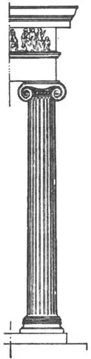

64
WOMAN’S STYLE BUILDING
女性风格的建筑

IT MAY seem rather far-fetched to say a building is like a woman, but the old Greeks had far-fetched imaginations. They imagined, for instance, that a vain boy had been turned into the flower we call the narcissus; that a girl who dared to love the beautiful Sun God was turned into the sunflower; and that a nymph had been turned into a laurel tree. So it was not such a great stretch of the imagination, after all, for them to say that a woman had been turned into a certain kind of column or that a certain kind of marble column was like a woman.

No.64-1
IONIC COLUMN
（爱奥尼亚柱）
An architect named Vitruvius who lived a hundred years before Christ said that the two curls on the head of this column were the locks of the woman’s hair; that the grooves or flutings in the body of the column were the folds of her gown; and that the base was her bare feet. They called this kind of column Ionic because it was first made in Ionia, a colony of Greece across the sea in Asia Minor.
But the best Ionic building was in Athens on the Acropolis, near the Doric temple, the Parthenon. It was called the Erechtheum because it was built in honor of Erechtheus who was supposed to have been a king of Athens in days long past.
The Parthenon was a Man’s Style building built in honor of woman. The Erechtheum was a Woman’s Style building built in honor of a man. Ionic columns were on three sides of the Erechthcum, but on the fourth end of the same building there are six statues of real women in place of columns and they hold the roof on their heads. It is called the Porch of the Maidens. So we get in the same temple, not only the Woman’s Style columns, but the actual women’s figures. The women’s figures are called Caryatids . The story is that they represented captives from Carya condemned to stand in this position, holding the roof on their heads, forever. One of the Caryatids was taken away to England and in its place was put a copy made of terra cotta.
The largest and most famous Ionic temple in the world was not in Greece itself. It was in Ionia at Ephesus. It was built to Diana, the Goddess of the Moon, and was so magnificent that it was called one of the Seven Wonders of the World. The Bible tells us that Saint Paul nearly started a riot there by preaching against Diana, who of course was a heathen goddess, and that the mob wouldn’t listen to him, but just to drown out what Saint Paul was trying to say against their goddess, kept crying aloud for two hours:“Great is Diana of the Ephesians! Great is Diana of the Ephesians!” The temple has disappeared (all hut the floor), but the sayings of Saint Paul, which the Ephesians tried to drown out, still last.
Another one of the Seven Wonders of the World was another Ionic building at a place called Halicarnassus. It was not a temple, however, but a tomb built for King Mausolus by his widow. Though this tomb is no more, we still call any very large tomb to-day a mausoleum after the tomb of Mausolus.
You don’t have to go all the way to Greece to see Ionic columns. There are probably many Ionic buildings where you live, but see if they are the true Ionic or what we call hybrid. That means a mixture, as a dog that is part fox terrier and part bull terrier is a mixture, a mongrel, a hybrid.
To-day our architects copy the Ionic style more often than they do the Doric, so if you should try to count the number of Ionic and Doric columns you can find in the place where you live, you would probably count several times as many Ionic as Doric.
【中文阅读】
要说某栋建筑物看起来像女人，这可能有点荒谬，但古希腊人却充满着这种荒谬的想象。比如，希腊人在想象中，把一个爱虚荣的小伙子变成了我们所说的水仙花；把一位大胆爱上太阳神的小姑娘变成了太阳花；把一位仙女变成了月桂树。所以，按着这种想象来说，希腊人把女人变成某种柱子，或者说，把某种石柱变成女人的模样，也就不足为奇了。
公元前100年诞生的，名叫维特鲁威的建筑师曾说过，石柱顶端的两个卷曲的部位是妇女两绺头发，柱身的或突或凹的凿纹则是妇女衣裙上的皱褶，而柱基则是她的赤脚。由于这种柱子首先出现在小亚细亚一跨海的希腊殖民地——爱奥尼亚，所以人们称这种柱子为爱奥尼亚柱。
但希腊最好的爱奥尼亚式建筑在雅典卫城，离陶立克风格的帕台农神庙不远。它被称作厄瑞克修姆神庙，是为纪念厄瑞克修姆而建——传说他是很久以前雅典的一位国王。
帕台农神庙是为女性建造的男性风格的建筑，而厄瑞克修姆神庙是为一位男性建造的女性风格的建筑。厄瑞克修姆神庙三面都有爱奥尼亚柱子，第四面的柱子则由六尊女人雕像代替，她们用头顶着神庙的屋顶。它叫做少女长廊。小朋友们现在看到的神庙不单有女性风格的柱子，而且里面还有真正的女人雕像。这些女人雕像叫做女像柱。原来有这样一种说法，这些女像代表从卡亚运来的俘虏，他们被诅咒了，并且永远以此种姿势站立，永远用头顶着屋顶。其中一根女雕像柱被运往英国，而替代物却只是一件用陶土做的摹制品。
世界上最大、最著名的爱奥尼亚式神庙却不在希腊本土，而在爱奥尼亚的以弗所。它是为纪念月亮女神狄安娜而建造的。它的壮观宏伟性使它成为世界七大奇迹之一。《圣经》告诉我们，圣保罗在布道中因反对狄安娜差点引起一场暴乱。狄安娜当然是一位异教女神。哪晓得众民们根本不听保罗的，反而不停地大声叫嚷，要把保罗反对他们女神的话压下去。“狄安娜，伟大的以弗所女神！狄安娜，伟大的以弗所女神！”众民们就这样喊了两个钟头。神庙现已不复存在（尽存一片基座），但保罗在以弗所人叫嚷声中的布道，却仍在流传。
另一座被列为世界七大奇迹之一的爱奥尼亚式建筑物，是在一个叫做哈里卡尔那索斯的地方。它不是一座神庙，而是摩索拉斯国王的遗孀为国王建造的一座陵墓。尽管陵墓现已不复存在，但人们今天仍会把任何一座大坟墓叫做摩索拉斯墓。
你没有必要千里迢迢去希腊参观爱奥尼亚柱子，在你住的地方可能就有许多爱奥尼亚风格的建筑。不过你要仔细观察，看看它们到底真的是爱奥尼亚型建筑呢，还只是我们所说的复合型，就是一种混合体，就像猎狐犬和牛头犬杂交而生的杂交狗一样，就是一个混血儿。
今天的建筑师更青睐于模仿爱奥尼亚式建筑风格，而不是陶立克式建筑风格。因此，如果你在所住的地方数一数所有的爱奥尼亚柱子和陶立克柱子，你就有可能发现爱奥尼亚柱式要比陶立克柱式多出好几倍呢。